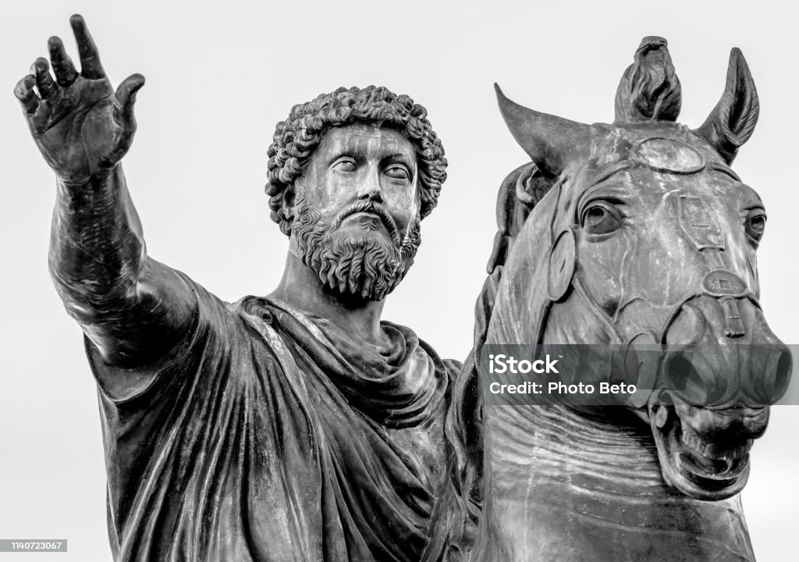

This website is awesome
This website has some subtext that goes here under the main title. It's a smaller font and the color is lower contrast

This website has some subtext that goes here under the main title. It's a smaller font and the color is lower contrast
Never esteem anything as of advantage to you that will make you break your word or lost your self-respect. -Marcus Aurelius
Sign up for our product by clicking that button right over there!